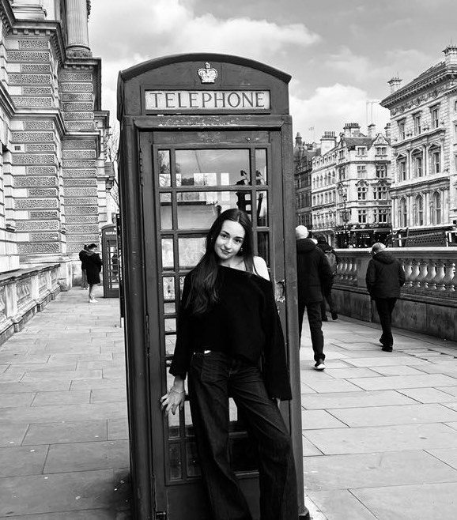

Sztuka towarzyszy mi od dzieciństwa i od zawsze była moim sposobem na wyrażanie siebie albo po prostu na zabicie wolnego czasu. Najczęściej sięgam po cienkopis i kredki, ale coraz lepiej wychodzi mi eksperymentowanie – i coraz bardziej to lubię.
Jestem miłośniczką matchy, książek oraz spełnioną właścicielką kota, który idealnie wpisuje się w mój świat – pełen lekkiego chaosu i spokoju jednocześnie.